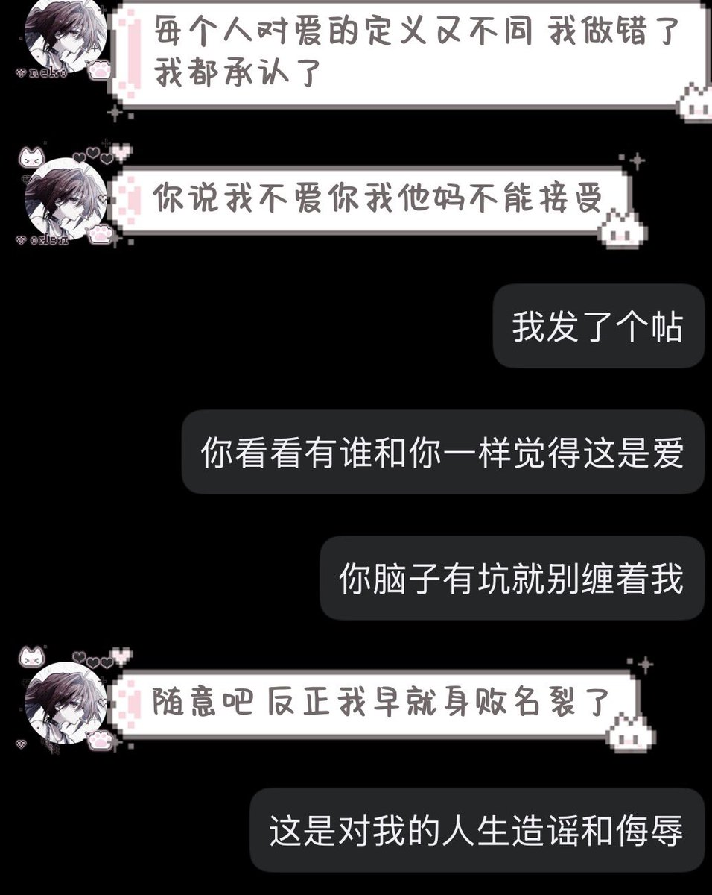
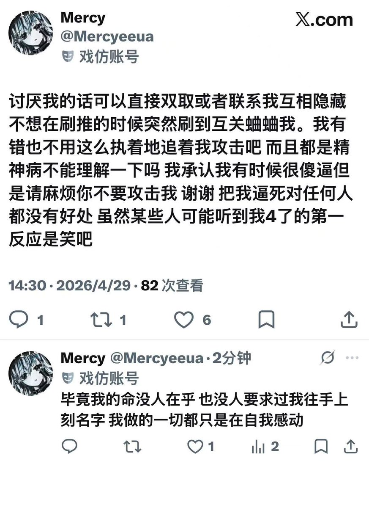

Rinko
@Rinko_zero8964
首先我没攻击你呀我说的都是是事实（^_^），不是你让随意的吗？你发太多死不死的了我都快不认识这个字了，不道歉还在这里卖惨不是装可怜感动自己是什么？不要说的好像自己付出了多少似的，拿精神病挡刀那就一辈子进精卫封闭🙏


Mercy
@Mercyeeua
讨厌我的话可以直接双取或者联系我互相隐藏 不想在刷推的时候突然刷到互关蛐蛐我。我有错也不用这么执着地追着我攻击吧 而且都是精神病不能理解一下吗 我承认我有时候很傻逼但是请麻烦你不要攻击我 谢谢 把我逼死对任何人都没有好处 虽然某些人可能听到我4了的第一反应是笑吧